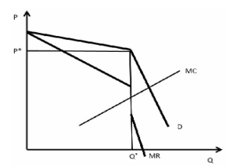

Oligopoly
An oligopoly market is a market structure characterised by a small number of firms that dominate the market. Examples of oligopolies include Ryanair and Air Lingus.
Key Features:
Few sellers; a small number of firms control the market.
Interdependence; one firms actions effect the other firm's outcomes, prices and
advertisement.
Price control; all firms have the power to influence prices, leading to price stability or
collusion. Price rigidity is often the case with oligopolies because firms want to avoid
price wars.
Barriers to entry; firms can enter and exit the market freely. Although entering the
market could be quite difficult because of the few firms that dominate it.
Product differentiation; products are often different from other firms' products in
hopes of getting more consumers.
Market Competitiveness:
The HHI (Herfindahl Hirschman index) is used to measure the markets competitiveness. HHI is calculated by squaring the market share of each competing firm in the industry and then summing the resulting numbers
Game Theory:
Oligopoly is interdependent and because of this people often use the game theory to
understand it.
The prisoner's dilemma is the main one used. It shows how two firms might not
agree and cooperate despite it being the best for both their firms. This can lead to a
worse outcome for both firms.
Graph: The Kinked Demand Curve
- The upper part of the curve (above the kink) is flatter, showing that if the firm increases price, it loses many customers.
- The lower part (below the kink) is steeper, showing that price cuts don’t increase sales much because rivals also lower their prices.
At the kink point, there is a discontinuity in the marginal revenue curve, meaning that
small cost changes don’t affect the firm’s chosen price. This explains why prices
remain stable in oligopolistic markets because firms try to keep prices the same to
avoid losing profit and market share.
Efficiency; oligopolies are not efficient because prices exceed marginal cost, creating
deadweight loss. They are less efficient than perfect competition but more efficient
than monopoly.
Innovation; high profits fund the research and development leading to technological
progress.
Consumer impact; the consumers benefit from product variety but often face higher
prices.